Razor Class libraries (RCLs) were introduced in ASP.NET Core 2.1 as a way to package and distribute UI components to be referenced and consumed within a host application. You can see them as a fully functioning part of a web application packaged as a class library. The templated management pages for ASP.NET Identity were included as a Razor Class Library in the project template in 2.1.
The Identity UI RCL includes the Razor pages, filters, a stub EmailService class that Identity uses, and local versions of both Bootstrap 3 and 4. RCLs can also include MVC controllers and Views, and API controllers.
Creating a Razor Class Library
The following walkthrough shows how to create a Razor Class Library that could function as a content management system (CMS), perhaps a Markdown editor, although it doesn't include any real functionality. The demonstration focuses entirely on the steps needed to get a Razor Class Library up and running successfully.
Start a new project in Visual Studio choosing the New ASP.NET Core Web Application template and name it EditorRCL
Select the Razor Class Library option, ensuring that the version is ASP.NET Core 2.1 or higher:
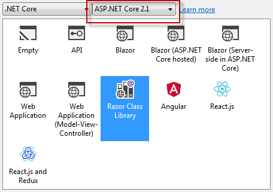
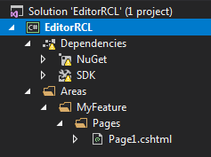
Build (or wait for VS to perform a restore) to get rid of warnings and then rename the MyFeature folder to Editor and delete Page1.cshtml and its PageModel class file
Add a Razor Page named Index.cshtml to the Pages folder in the Editor area with the following code:
@page @model EditorRCL.Areas.Editor.Pages.IndexModel @{ } <h1>RCL Editor</h1>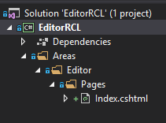
Right click on the solution in Soultion Explorer and choose Add » New Project, and select ASP.NET Core Web Application. Name it EditorHost and then choose Web Application. The Razor Pages application that gets generated will provide the test environment for the Razor class library.
Add a reference to the EditorRCL from within the EditorHost site. You can do this by right-clicking on EditorHost project in Solution Explorer and choosing Add » Reference, or by modifying the EditorHost.csproj file to include a
ProjectReferenceentry so that it looks like this:<Project Sdk="Microsoft.NET.Sdk.Web"> <PropertyGroup> <TargetFramework>netcoreapp2.1</TargetFramework> </PropertyGroup> <ItemGroup> <PackageReference Include="Microsoft.AspNetCore.App" /> </ItemGroup> <ItemGroup> <ProjectReference Include="..\EditorRCL\EditorRCL.csproj" /> </ItemGroup> </Project>Make sure that EditorHost is set as the startup project:
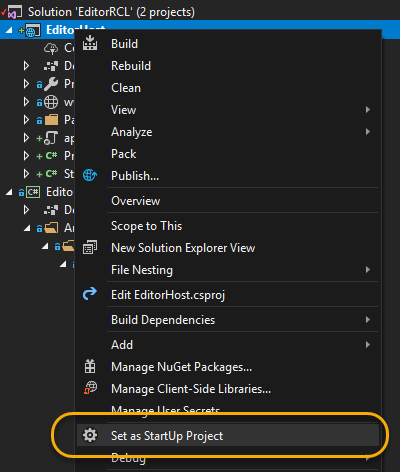
and run the application. You should get the default template home page. Add /editor to the URL. The result should look like this:
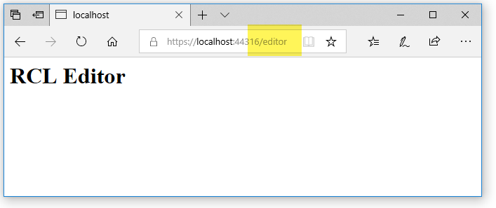
If it does, then the Razor class library has been referenced correctly and is working.
However, the output is totally unstyled. If you look at the source for the page, it consists of a single line of HTML:
<h1>RCL Editor</h1>. The page needs a Layout.
Adding a Layout
Add a new folder named Shared to the Pages folder in the EditorRCL project.
Add a Razor Layout named _Layout.cshtml to this folder with the following code:
<!DOCTYPE html> <html> <head> <meta charset="utf-8" /> <meta name="viewport" content="width=device-width, initial-scale=1.0" /> <title>@ViewData["Title"]</title> <environment include="Development"> <link rel="stylesheet" href="~/css/bootstrap.css" /> <link rel="stylesheet" href="~/css/site.css" /> </environment> <environment exclude="Development"> <link rel="stylesheet" href="https://cdnjs.cloudflare.com/ajax/libs/twitter-bootstrap/4.1.3/css/bootstrap.min.css" asp-fallback-href="~/css/bootstrap.min.css" asp-fallback-test-class="sr-only" asp-fallback-test-property="position" asp-fallback-test-value="absolute" /> <link rel="stylesheet" href="~/css/site.css" asp-append-version="true" /> </environment> <link href="https://fonts.googleapis.com/icon?family=Material+Icons" rel="stylesheet"> </head> <body> <div class="container"> <main role="main" class="pb-3"> @RenderBody() </main> </div> <footer class="border-top footer text-muted"> <div class="container"> © 2018 </div> </footer> <environment include="Development"> <script src="~/js/jquery.js"></script> <script src="~/js/bootstrap.bundle.js"></script> <script src="~/js/site.js" asp-append-version="true"></script> </environment> <environment exclude="Development"> <script src="https://cdnjs.cloudflare.com/ajax/libs/jquery/3.3.1/jquery.min.js" asp-fallback-src="~/js/jquery.min.js" asp-fallback-test="window.jQuery" crossorigin="anonymous" integrity="sha256-FgpCb/KJQlLNfOu91ta32o/NMZxltwRo8QtmkMRdAu8="> </script> <script src="https://cdnjs.cloudflare.com/ajax/libs/twitter-bootstrap/4.1.3/js/bootstrap.bundle.min.js" asp-fallback-src="~/js/bootstrap.bundle.min.js" asp-fallback-test="window.jQuery && window.jQuery.fn && window.jQuery.fn.modal" crossorigin="anonymous" integrity="sha256-E/V4cWE4qvAeO5MOhjtGtqDzPndRO1LBk8lJ/PR7CA4="> </script> <script src="~/js/site.min.js" asp-append-version="true"></script> </environment> @RenderSection("Scripts", required: false) </body> </html>Add a new Razor View Start file to the Pages folder in the EditorRCL project named _ViewStart.cshtml. The default template should contain the following code:
@{ Layout = "_Layout"; }Now if you run the application, it looks like the Layout page is working:
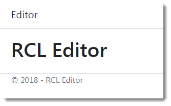
And it is working - to an extent. It is being referenced correctly from the Razor Page, but if you look at the source code, you can see environment tags and other tag helper attributes:
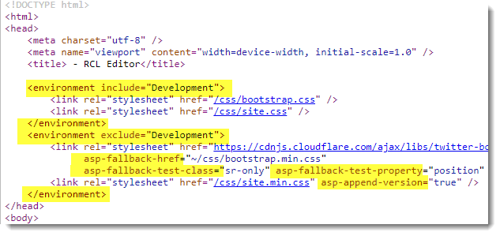
The Tag Helpers are not being processed. They look like they might be, because Bootstrap is being applied. However the CSS file that should be used in development mode is supposed to be located in a folder named css, which doesn't exist yet. The rendered environment tags are being ignored by the browser and the CDN version of Bootstrap is being used instead.
Tag helpers are an opt-in feature, so we shall opt in. Add a new Razor View Imports file to the Pages folder in the EditorRCL project. Add the following code to the file:
@namespace EditorRCL.Areas.Editor.Pages @addTagHelper *, Microsoft.AspNetCore.Mvc.TagHelpersNow when you run the page, you will find that no Bootstrap styles are being applied, and the browser cannot find any css or js files being referenced in Development mode:
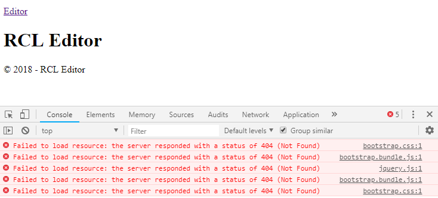
Adding Static Resources
The final step involves adding local copies of script and style files to the class library and then configuring them to work.
Create a folder named resources in the root of the EditorRCL project (at the same level as the Areas folder) ands within that add two further folders named css and js:
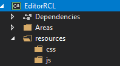
Add Bootstrap 4 and Jquery files to the folders. I copied these across from a Razor Pages 2.2 project template (created using the
dotnet new razorcommand with the preview of .NET Core 2.2 SDK installed). Alternatively you can obtain them yourself using npm, Nuget or by going to the project sites and obtaining the files. You should also create a site.css file and a site.js file and add those to the relevant folders: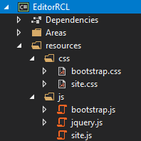
Static files in a standalone class library cannot be browsed like those in a web application. They need to be included in the resulting compiled assembly as embedded resources. So the next step is to alter the EditorRCL.csproj file to specify that the contents of the resources folder should be included as an embedded resource, include the
Microsoft.Extensions.FileProviders.Embeddedpackage andMicrosoft.AspNetCore.StaticFiles, and importantly, to specify that a manifest is generated for the embedded resources:<Project Sdk="Microsoft.NET.Sdk.Razor"> <PropertyGroup> <TargetFramework>netstandard2.0</TargetFramework> <GenerateEmbeddedFilesManifest>true</GenerateEmbeddedFilesManifest> </PropertyGroup> <ItemGroup> <PackageReference Include="Microsoft.AspNetCore.Mvc" Version="2.1.2" /> <PackageReference Include="Microsoft.Extensions.FileProviders.Embedded" Version="2.1.1" /> <PackageReference Include="Microsoft.AspNetCore.StaticFiles" Version="2.1.1" /> </ItemGroup> <ItemGroup> <EmbeddedResource Include="resources\**\*" /> </ItemGroup> </Project>Next, borrowing code from the IdentityUI source, add the following class to the EditorRCL project:
using Microsoft.AspNetCore.Builder; using Microsoft.AspNetCore.Hosting; using Microsoft.AspNetCore.StaticFiles; using Microsoft.Extensions.FileProviders; using Microsoft.Extensions.Options; using System; namespace EditorRCL { internal class EditorRCLConfigureOptions : IPostConfigureOptions<StaticFileOptions> { private readonly IHostingEnvironment _environment; public EditorRCLConfigureOptions(IHostingEnvironment environment) { _environment = environment; } public void PostConfigure(string name, StaticFileOptions options) { // Basic initialization in case the options weren't initialized by any other component options.ContentTypeProvider = options.ContentTypeProvider ?? new FileExtensionContentTypeProvider(); if (options.FileProvider == null && _environment.WebRootFileProvider == null) { throw new InvalidOperationException("Missing FileProvider."); } options.FileProvider = options.FileProvider ?? _environment.WebRootFileProvider; // Add our provider var filesProvider = new ManifestEmbeddedFileProvider(GetType().Assembly, "resources"); options.FileProvider = new CompositeFileProvider(options.FileProvider, filesProvider); } } }This code creates an additional
FileProvider, pointing to the resources folder, and adds it to those that retrieve static files.Add the following extension method to simplify applying the configuration in the Startup class
ConfigureServicemethod:using Microsoft.Extensions.DependencyInjection; namespace EditorRCL { public static class EditorRCLServiceCollectionExtensions { public static void AddEditor(this IServiceCollection services) { services.ConfigureOptions(typeof(EditorRCLConfigureOptions)); } } }Modify the ConfigureServices method in the EditorHost application's Startup class to include a call to the extension method above (line 10 below):
public void ConfigureServices(IServiceCollection services) { services.Configure<CookiePolicyOptions>(options => { // This lambda determines whether user consent for non-essential cookies is needed for a given request. options.CheckConsentNeeded = context => true; options.MinimumSameSitePolicy = SameSiteMode.None; }); services.AddEditor(); services.AddMvc().SetCompatibilityVersion(CompatibilityVersion.Version_2_1); }Now when you run the application, you can see that the embedded resources are retrieved successfully:

Overriding Class Library Content
The consuming application can override any aspect of the Razor Class Library by emulating the area folder structure of the class library. Based on the example above, you can replace the Index page within the RCL by creating the following structure within the EditorHost project:
Areas
Editor
Pages
Index.cshtml
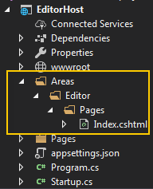
The ViewStart file within the RCL will still be executed, and the layout specified in that will be applied. If you want to override the layout, you need to provide one that conflicts with the search paths which in this case are:
/Areas/Editor/Pages/
/Areas/Editor/Pages/Shared/
/Areas/Editor/Views/Shared/
/Pages/Shared/
/Views/Shared/
The RCL version of the layout is found in /Areas/Editor/Pages/Shared/, so your override version should be placed in that location or any (just one here) location searched prior to that. Alternatively, you can reference a custom layout directly in the override Index page using a full relative path.